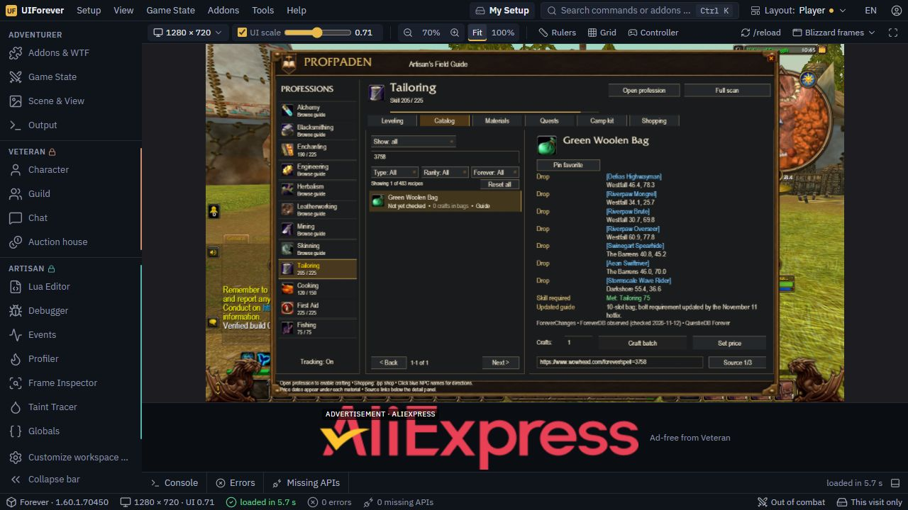
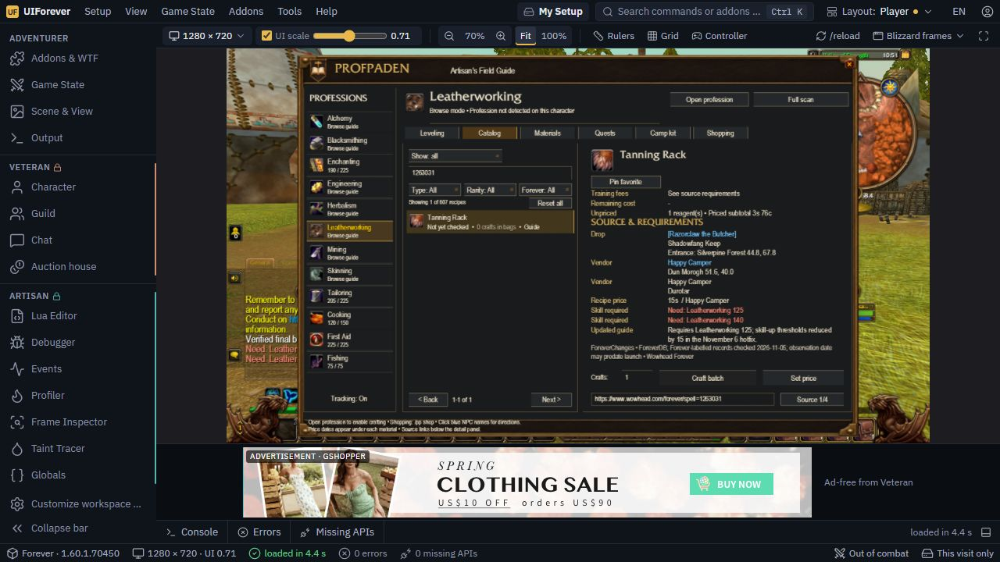

Provenance and validation details
UIForever build 1.60.1.70450 loaded version 0.20.34-rc1 with zero errors and zero missing APIs. Green Woolen Bag shows five bolts and its updated guide note. This is a simulator, not live-game acceptance.

Tanning Rack static sources and thresholds are corrected to 125/125/127/130. The older simulator still returns a separate Requires Leatherworking (140) item tooltip, so that extra row remains visible. Real client tooltips are intentionally preserved. See runtime observations and limitation.

Actual addon detail-row output from Lua 5.1 tests, without simulated client tooltip data.
Recipe | - • Uncommon Type / skill | Recipe to Container One craft | - • Output 1 Material value | - • 1 crafts Materials owned | - used from bags Still to buy | - Training fees | See source requirements Remaining cost | - Unpriced | 1 reagent(s) • Priced subtotal 2s MATERIALS • 1 CRAFT(S) Material | Have / Need | Each | Total [Bolt of Woolen Cloth] | 0 / 5 | - | - Unknown • Updated - [Green Dye] | 0 / 1 | 1s | 1s Vendor list estimate • Updated - [Fine Thread] | 0 / 1 | 1s | 1s Vendor list estimate • Updated - SOURCE & REQUIREMENTS Drop | [Flesh Eater] Duskwood 25.1, 38.2 Drop | [Harvest Golem] Westfall 47.1, 67.6 Drop | [Skeletal Warrior] Duskwood 77.4, 73.8 Drop | [Defias Smuggler] Westfall 46.6, 19.6 Drop | [Riverpaw Taskmaster] Westfall 56.5, 70.1 Drop | [Harvest Watcher] Westfall 38.0, 47.8 Drop | [Harvest Reaper] Westfall 65.7, 61.1 Drop | [Defias Pathstalker] Westfall 38.7, 69.9 Drop | [Defias Highwayman] Westfall 46.4, 78.3 Drop | [Riverpaw Mongrel] Westfall 34.1, 25.7 Drop | [Riverpaw Brute] Westfall 30.7, 69.8 Drop | [Riverpaw Overseer] Westfall 60.9, 77.8 Drop | [Swinegart Spearhide] The Barrens 40.8, 45.2 Drop | [Aean Swiftriver] The Barrens 46.0, 70.0 Drop | [Stormscale Wave Rider] Darkshore 56.2, 34.6 Skill required | Need: Tailoring 75 Updated guide | 10-slot bag; bolt requirement updated by the November 11 hotfix. ForeverChanges • ForeverDB observed (checked 2026-11-12) • QuestieDB Forever
Recipe | - • Common Type / skill | Trade goods One craft | - • Output 1 Material value | - • 1 crafts Materials owned | - used from bags Still to buy | - Training fees | See source requirements Remaining cost | - Unpriced | 1 reagent(s) • Priced subtotal 0c MATERIALS • 1 CRAFT(S) Material | Have / Need | Each | Total [Coarse Stone] | 0 / 2 | - | - Unknown • Updated - SOURCE & REQUIREMENTS Training fee | 2s 50c (source) Trainer | Angus Hammerhand Tirisfal Glades Trainer | Basil Frye Undercity 60.2, 29.1 Trainer | [Dane Lindgren] Stormwind City 64.1, 37.0 Skill required | Need: Blacksmithing 50 Updated guide | Skill-ups: 50–90. Gray threshold raised to 90 in the November 10 hotfix; green uses the catalog midpoint convention. ForeverDB observed (checked 2026-11-06) • ForeverDB observed (checked 2026-11-12)
Recipe | - • Uncommon • NEW Type / skill | Recipe to Other One craft | - • Output 1 Material value | - • 1 crafts Materials owned | - used from bags Still to buy | - Training fees | See source requirements Remaining cost | - Unpriced | 1 reagent(s) • Priced subtotal 3s 76c MATERIALS • 1 CRAFT(S) Material | Have / Need | Each | Total [Medium Leather] | 0 / 5 | - | - Unknown • Updated - [Fine Thread] | 0 / 3 | 1s | 3s Vendor list estimate • Updated - [Simple Wood] | 0 / 2 | 38c | 76c Vendor list estimate • Updated - SOURCE & REQUIREMENTS Drop | [Razorclaw the Butcher] Shadowfang Keep Entrance: Silverpine Forest 44.8, 67.8 Vendor | Happy Camper Dun Morogh 51.6, 40.0 Vendor | Happy Camper Durotar Recipe price | 15s / Happy Camper Skill required | Need: Leatherworking 125 Updated guide | Requires Leatherworking 125; skill-up thresholds reduced by 15 in the November 6 hotfix. ForeverChanges • ForeverDB; Forever-labelled records checked 2026-11-05; observation date may predate launch • Wowhead Forever
Recipe | - • Uncommon • NEW Type / skill | Recipe to Other One craft | - • Output 1 Material value | - • 1 crafts Materials owned | - used from bags Still to buy | - Training fees | See source requirements Remaining cost | - Unpriced | 2 reagent(s) • Priced subtotal 0c MATERIALS • 1 CRAFT(S) Material | Have / Need | Each | Total [Vision Dust] | 0 / 2 | - | - Unknown • Updated - [Lesser Nether Essence] | 0 / 1 | - | - Unknown • Updated - SOURCE & REQUIREMENTS Vendor | Happy Camper Dun Morogh 51.6, 40.0 Drop | Rath'mael Ruins of Lordaeron Drop | Shade of the Archmage Alterac Mountains Drop | [Charlga Razorflank] Razorfen Kraul Entrance: The Barrens 42.9, 90.2 Vendor | Happy Camper Durotar Recipe price | 15s / Happy Camper Skill required | Need: Enchanting 140 Updated guide | Crafting tool: Runed Golden Rod. The disenchanting bonus also applies to lower-level enchanters. ForeverChanges / player screenshots, 16 Oct • ForeverDB; Forever-labelled records checked 2026-11-05; observation date may predate launch • Wowhead Forever (checked 2026-11-05)
Recipe | - • Uncommon Type / skill | Recipe to Container One craft | - • Output 1 Material value | - • 3 crafts Materials owned | - used from bags Still to buy | - Training fees | See source requirements Remaining cost | - Unpriced | 1 reagent(s) • Priced subtotal 6s MATERIALS • 3 CRAFT(S) Material | Have / Need | Each | Total [Bolt of Woolen Cloth] | 0 / 15 | - | - Unknown • Updated - [Green Dye] | 0 / 3 | 1s | 3s Vendor list estimate • Updated - [Fine Thread] | 0 / 3 | 1s | 3s Vendor list estimate • Updated - SOURCE & REQUIREMENTS Drop | [Flesh Eater] Duskwood 25.1, 38.2 Drop | [Harvest Golem] Westfall 47.1, 67.6 Drop | [Skeletal Warrior] Duskwood 77.4, 73.8 Drop | [Defias Smuggler] Westfall 46.6, 19.6 Drop | [Riverpaw Taskmaster] Westfall 56.5, 70.1 Drop | [Harvest Watcher] Westfall 38.0, 47.8 Drop | [Harvest Reaper] Westfall 65.7, 61.1 Drop | [Defias Pathstalker] Westfall 38.7, 69.9 Drop | [Defias Highwayman] Westfall 46.4, 78.3 Drop | [Riverpaw Mongrel] Westfall 34.1, 25.7 Drop | [Riverpaw Brute] Westfall 30.7, 69.8 Drop | [Riverpaw Overseer] Westfall 60.9, 77.8 Drop | [Swinegart Spearhide] The Barrens 40.8, 45.2 Drop | [Aean Swiftriver] The Barrens 46.0, 70.0 Drop | [Stormscale Wave Rider] Darkshore 56.2, 34.6 Skill required | Need: Tailoring 75 Updated guide | 10-slot bag; bolt requirement updated by the November 11 hotfix. ForeverChanges • ForeverDB observed (checked 2026-11-12) • QuestieDB Forever